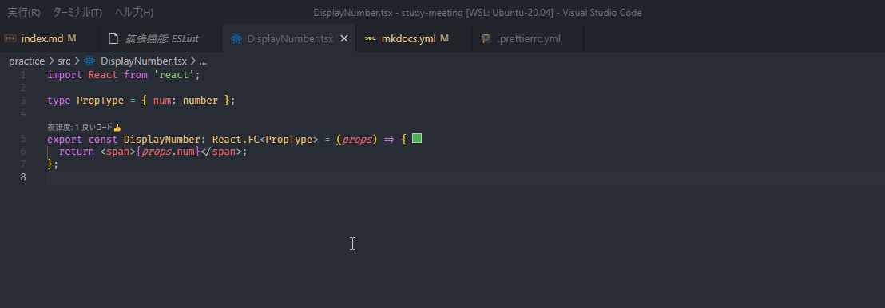

Linter と Formatter
筆者: 海老原 賢次（ebi311@gmail.com）
作成日: 2022-02-11
更新履歴:
- 2022-02-11: 新規作成
概要
ソースコードを書く上で、Linter と Formatter があると無いとでは効率が大きく異なります。
Linter は、構文チェックです。これは、言語仕様として間違っているところだけではなく、推奨されない書き方を警告したり、場合によっては自動的に修正してくれます。
Formatter は、コードの整形ツールです。コードの読みやすさに貢献します。また、チームで開発する場合、インデントの数が開発者によって異なると、gitなどの構成管理ツールでインデントの変更だけで履歴が作成されてしまい、本当に確認すべき変更点を見つけにくくなってしまいます。
いずれも、ルールをカスタマイズすることができ、チームごとに定義されたコーディング規約を機械的に守らせることができるので、レビューでの最低限のチェックを省くことも出来ます。
殆どの言語には Linter / Formatter のツールが用意されているので、積極的に利用しましょう。
ここでは、JavaScript / TypeScript のこれらについて説明します。
ESLint
ESLint - Pluggable JavaScript linter
ESLint は、JavaScript の Linter で、プラグインを導入することで、TypeScript にも対応できます。
ルールの種類は 200 以上あり、環境や好みに合わせた柔軟な設定ができます。 List of available rules - ESLint - Pluggable JavaScript linter
ルールの例
- 値の比較として、
==を禁止し===の使用を強制する。 -
文の末尾の
;をつけることを強制する。
その一方でそんなに数があると、自分で1つ1つ設定するのは非常に困難です。そこで、ルールのセットも用意されており、これをベースに一部を上書き、追加することが通常の利用方法だと思います。
そのセットも、ESLint 標準のもの、Google の JavaScript スタイルガイドに沿ったもの、Airbnb のスタイルガイドに沿ったもの、などが公開されておりそれらを利用することも出来ます。
実際にその効果を試してみましょう。
前の講座で React を作成したフォルダがあればそれを利用しましょう。
インストールと設定
まずは、ESLint を yarn add で導入します。開発環境で使うものなので、-D を忘れないようにします。
create react app を利用して作成した場合は、eslint と react 用のプラグインなどがすでに導入されているので、インストールの必要はありません。
設定も Recommend のものが設定されており、不要です。
設定はここで紹介している、.eslintrc.ymlではなく、package.jsonのeslintConfigに記述されています。
ESLint のルールや動作の設定は、.eslintrc ファイルに yaml や JSON 形式で記述します。
手動で作っても良いのですが、ウィザードで簡単に作成することが出来ます。下記コマンドで開始できます。
はじめの質問は、ESLint でチェックする内容です。ここで一番下のものを選択すると、後ほど、Google や Airbnb のコーディング規約を選択できます。
次は、モジュール参照の仕方を聞いています。TypeScript を使うので、一番上の JavaScript modules を選択します。
次は、使用するフレームワークがあればそれを選択します。ここでは、React を使うのでそれを選択します。
TypeScript を使うので、Yes です。
プログラムは、ブラウザで動作するものか、Node.js で動作するものかを選択します。両方選択することも出来ます。ここでは、Browser を選択しておきましょう。
コードスタイルのガイドラインの利用を選択します。ここでは、ポピュラーなスタイルガイドを利用したいので Use a popular style guide を選択します。
コードスタイルを選択します。好みで選んでよいのですが、ここでは Standard のものを選択しておきましょう。
.eslint をどの形式で書くかを聞いています。どれでも問題ないのですが、ここではYAML がシンプルでわかりやすいので、それを選択しましょう。
プロジェクトで、yarn や pnpm を使用している場合は、それに合わせて変更してください。
必要な追加のパッケージをインストールするかと聞いてます。Yes とします。
処理が始まり、しばらくすると完了します。.eslintrc.yml が作成されているのを確認してください。
React のプラグインをインストールする
eslint-plugin-reactが React Hook に対応したので、ここの記述は不要です。
次に追加で、React Hooks の プラグインも入れます。
このプラグインを適用するため、.eslintrc.yml に追加します。
実行してみる
早速チェックしてみます。下記コマンドで実行します。
色々エラーが出ました。
quotes や object-curly-spacing とあるのは、コードの整形に関するものです。これは、後ほど Prettier の方で定義しますので、今は無視してください。
react/prop-types は、React でプロパティの型チェックを推奨するルールのために発生しています。
しかし、これは TypeScript で型指定されているので、今回のこれについては必要のないエラーです。ルールでこれを off にしましょう。
エラーメッセージの末尾にあるのが、ルール名です。これをコピーします。そして、.eslintrc.yml ファイルに、ルールを追加します。
再度テストを実行すると、エラーが無くなっていることが確認できます。
今度は、 --fix をつけて実行します。
すると、エラーが表示されなくなりました。コードを見ると、文字列リテラルが、シングルクォーテーションに変わっています。また、{ } の間のスペースが無くなりました。
このように、全てではないですがこのように自動修正できるルールもあります。
React Hooks のプラグインの効果を見てみます。Increment.tsx を開き、useCallback の第2引数の配列を空にしてみます。
eslint を実行すると、下記のような warning が出ます。
これは、useCallback の関数の中で使っている変数を、第2引数に定義していない場合に警告されます。第2引数に値が入っていないと、関数が更新されず、関数内の変数も初期の状態が保持され、その変数が変更されても関数の結果が変わらない、ということになります。
React Hooks ではこれを忘れやすいのですが、ESLint で警告してくれるのでミスが少なくなります。
ESLint をいちいちコマンド打つのは面倒です。Visual Studio Code などのソースコードエディタやIDEでは、ESLint の拡張を入れることでソースコードにリアルタイムで警告を出すことが出来ます。
ESLint - Visual Studio Marketplace
Prettier
Prettier · Opinionated Code Formatter
Prettier は、多くのプログラム言語に対応したコードフォーマッタです。自動で修正もしてくれます。
もちろん、JavaScript / TypeScript に対応しています。
インストールして試してみます。
ルールは、.prettierrc.yml ファイルに書きます。
ルールの種類と設定値は、こちらにあります。
ここで、その一覧を提示しておきます。そのまま定義ファイルとして利用できます。(v 2.4.1)
試してみましょう。まずは構文としてはあっているけど、読みにくいソースコードを用意しましょう。
コマンドプロンプトで、prettier を実行します。
結果として、整形されたコードが出力されました。通常はファイルを自動的に更新して保存したいでしょう。
その場合は、-w をつけて実行します。
ファイルが書き換わりました。フォルダ内のファイルを一度に処理するには、下記のようにします。
ファイルパスには、Glob と呼ばれるパス指定方法が使用できます。
Prettier 以外にも採用しているツールは多いので、覚えておくと良いです。
https://github.com/mrmlnc/fast-glob#pattern-syntax
VSCode の拡張として Prettier があるので、これを入れておくとコマンドを打つことなく、コードを書きながら整形ができて効率的です。
Prettier - Code formatter - Visual Studio Marketplace インストールしたら、デフォルトのフォーマッタとして登録しましょう。
Ctrl+Shift+P -> [ドキュメントのフォーマット...] -> [規定のフォーマッタを構成...] -> [Prettier]

エディタ上でのフォーマットは、 Shift+Alt+F でできます。
また、設定で保存時に自動的にフォーマットをする、というオプションもあります。
これらにより、コードを書くと気にフォーマットを気にせず、ロジックを書くことに集中できるようになります。
ESLint と Prettier の組み合わせ
ESLint には、フォーマッタの機能もあるのですが、Prettier の方が性能がよいので、組み合わせて使うことが多いです。
具体的には、ESLint のフォーマットに関するルールを無効にして、Prettier に依存することになります。
そのための方法が、Prettier の公式のサイトに書かれています。
Integrating with Linters · Prettier
以前は、公式の連携方法として、ESLint のエラーとして、Prettier のフォーマット違反を出力するようにしていましたが、 現在では、エラーとはせず、eslint の --fix で Prettier のフォーマットも行うことが推奨されています。
理由としては、下記があります。
- エディターに赤いニョロニョロがたくさん出てくる。Prettier は format のことを気にしなくてもいいようにさせるツールなのに、フォーマットの警告が前面にでてきてしまう。
- 直接 Prettier を実行するより遅い
- レイヤーをひとつ挟んでおり、不整合が起きる可能性がある
確かに、VSCode などのエディタでもフォーマットを直ちに行う事ができるので、ツールでエラーを出すこともないと思います。
ESLint のフォーマット関連のルールを無効化するプラグインをインストールします。
.eslintrc.yml の extends に下記を追加します。
これで、エディタ上でフォーマットに関するエラーが出なくなりました。
npm スクリプトで、eslint と prettier を一緒に書けるようにコマンドを定義します。
まとめ
ESLint と Prettier について説明しました。
これらのルールは多岐にわたるので、プロジェクトに合わせて設定してみて下さい。
また、組織で Recommend の定義を作っておくことで、開発者が統一したルールで作業できるので、さらに効率が上がるのではないでしょうか？
これらは、JavaScript の開発ではデファクト・スタンダードなものですが、モジュールバンドラやテストなども含めて様々なツールを組み合わせることが必要です。
それは、それぞれツールを入れ替えるなどして柔軟な対応ができる反面、めんどくさくもあります。
現在、それらを統一したツールを作成しようと、Rome というプロジェクトが立ち上がっています。
まだこれから、というものなので使用できるのはもう少し先になりそうですが、注目していきたいです。
~~ https://rome.tools/ ~~
残念ながら、Rome プロジェクトは停止してしまいました。代わりに、公式なフォークとなる Biome プロジェクトで引き継がれて活動が再開しています。
現在は、Analyzer, Formatter, Linter の3つのツールが提供されています。